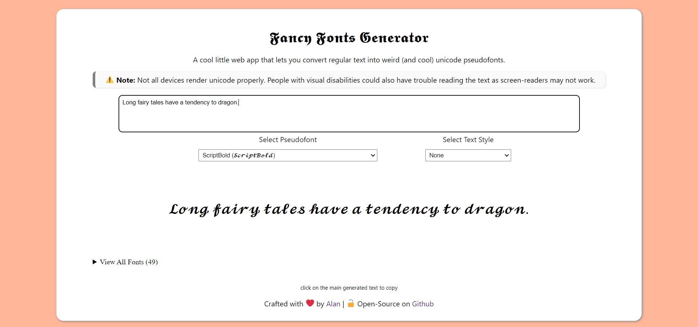

Fancy Fonts Generator
2021-08-07
A super-simple web app that you can use to generate cool, weird, and beautiful text using pseudofonts made with Unicode characters. This is the GUI-based equivalent of the Fancy Fonts Bot for Telegram that I wrote not too long ago. They are both similar in terms of functionality and the font system is cross-compatible. It's written in HTML, CSS, and vanilla Javascript with no dependencies.
It uses a system of pseudofonts where similar looking strings of unicode symbols are used to replace the entire english alphabet to create a fake font. I've described it in detail in this article.
Note: Text generated using this application may not always be readable, they could also cause accessibility issues as screen-readers might not recognize them. So it is advised that you use them knowing the downsides.
𝕿𝖍𝖎𝖘 𝖕𝖆𝖗𝖆𝖌𝖗𝖆𝖕𝖍 𝖔𝖋 𝖙𝖊𝖝𝖙 𝖜𝖆𝖘 𝖌𝖊𝖓𝖊𝖗𝖆𝖙𝖊𝖉 𝖚𝖘𝖎𝖓𝖌 𝖙𝖍𝖊 𝖜𝖊𝖇 𝖆𝖕𝖕.
𝓘𝓽 𝓾𝓼𝓮𝓼 𝓼𝓸𝓶𝓮 𝓸𝓯 𝓽𝓱𝓮 𝓭𝓲𝓯𝓯𝓮𝓻𝓮𝓷𝓽 𝓯𝓸𝓷𝓽𝓼 𝓽𝓱𝓪𝓽 𝓪𝓻𝓮 𝓪𝓿𝓪𝓲𝓵𝓪𝓫𝓵𝓮 𝓫𝔂 𝓭𝓮𝓯𝓪𝓾𝓵𝓽.
𝕋𝕙𝕚𝕤 𝕜𝕚𝕟𝕕 𝕠𝕗 𝕥𝕖𝕩𝕥 𝕔𝕒𝕟 𝕓𝕖 𝕔𝕠𝕡𝕚𝕖𝕕 𝕒𝕟𝕕 𝕡𝕒𝕤𝕥𝕖𝕕 𝕒𝕟𝕪𝕨𝕙𝕖𝕣𝕖.
𝑻𝒉𝒆𝒚 𝒘𝒊𝒍𝒍 𝒔𝒕𝒊𝒍𝒍 𝒓𝒆𝒕𝒂𝒊𝒏 𝒕𝒉𝒆𝒊𝒓 𝒐𝒓𝒊𝒈𝒊𝒏𝒂𝒍 𝒍𝒐𝒐𝒌 𝒂𝒔 𝒍𝒐𝒏𝒈 𝒂𝒔 𝒕𝒉𝒆 𝒑𝒍𝒂𝒕𝒇𝒐𝒓𝒎 𝒔𝒖𝒑𝒑𝒐𝒓𝒕𝒔 𝒖𝒏𝒊𝒄𝒐𝒅𝒆.
𝚃𝚑𝚎𝚢 𝚖𝚒𝚐𝚑𝚝 𝚜𝚘𝚖𝚎𝚝𝚒𝚖𝚎𝚜 𝚋𝚎 𝚍𝚒𝚏𝚏𝚒𝚌𝚞𝚕𝚝 𝚝𝚘 𝚛𝚎𝚊𝚍 𝚑𝚘𝚠𝚎𝚟𝚎𝚛, 𝚊𝚗𝚍 𝚌𝚊𝚞𝚜𝚎 𝚊𝚌𝚌𝚎𝚜𝚜𝚒𝚋𝚒𝚕𝚒𝚝𝚢 𝚒𝚜𝚜𝚞𝚎𝚜.
Ｓｏ Ｉ'ｄ ｒｅｃｏｍｍｅｎｄ ｎｏｔ ｕｓｉｎｇ ｉｔ ｆｏｒ ｉｍｐｏｒｔａｎｔ ｔｅｘｔ.
🅞🅝🅛🅨 🅤🅢🅔 🅘🅣 🅣🅞 🅗🅐🅥🅔 🅕🅤🅝!
Features
- Real-time text to pseudofont conversion.
- 50+ unique fonts pre-defined.
- Simple syntax for adding custom fonts.
- Can double as a pun generator. 😛
- Ability to convert all loaded fonts at the same time.
Links
The web app is open-source, MIT licensed, and available on my Github. A live version is also available to play with.
- 🔗 Live Demo
- 🔗 Source Code